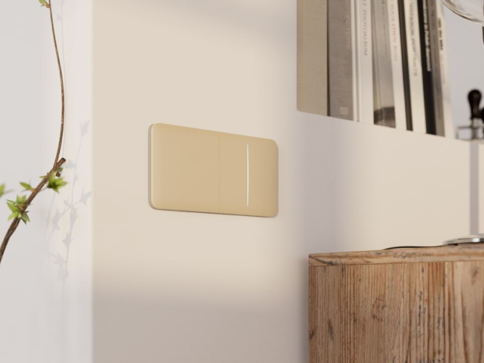
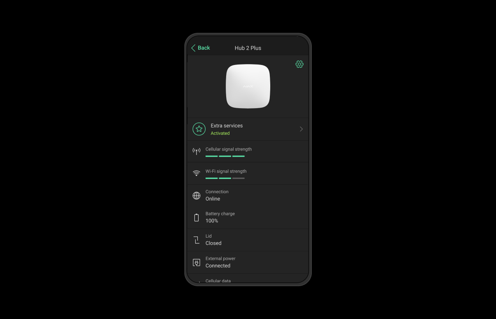

Les sites.
Commerces
Ouvertures, réserve, caisse.
Bureaux
Zones, horaires, utilisateurs.
Entrepôts
Volume, quais, radio.
ERP
SSI Type4 ou PPMS, selon le site.
Plusieurs sites
Un interlocuteur, chaque adresse.
Selon le besoin.
Les lignes suivent le menu Produits Ajax.
Intrusion
Baseline ou Superior.
VoirVidéo
Baseline ou Superior. L’image peut lancer l’alarme.
VoirSSI
Type4, PPMS ou Residence.
VoirAccès
Claviers, badges, groupes.
VoirConfort
Éclairage, prises, relais.
VoirTélésurveillance
Peut se discuter. Ce n’est pas un service déjà ouvert.
En savoir plus
La ligne EN54 reste au catalogue. Elle n’est pas une des trois lignes du menu Produits.
Chiffres du fabricant.
- Jusqu'à 2 000 mportée de communication avec les dispositifs Ajax sans fil · Hub Jeweller
- 100dispositifs Ajax sans fil peuvent être ajoutés à une centrale · Hub Jeweller
- Jusqu'à 15 heuresde fonctionnement autonome avec batterie de secours · Hub Jeweller
- 50utilisateurs · Hub Jeweller
- 9groupes de sécurité peut être créé pour gérer la sécurité de l'établissement · Hub Jeweller
- Jusqu'à 12 mdistance de détection de mouvement · MotionProtect
- Jusqu'à 5 ansde fonctionnement avec batteries préinstallées · MotionProtect
- Jusqu'à 1 700 mportée de communication avec une centrale Ajax ou un prolongateur de portée 1 · MotionProtect
Source : Ajax Systems
Le déroulé.

1Étude
Nous venons voir le lieu.
 2
2Devis
Le prix est dans le devis.
 3
3Installation
Pose et essais chez vous.

4Mise en service
Vous armez depuis l’application.
- 5
SAV
Nous restons joignables.
- –Kit à monterLe plan et les tests restent chez vous.
- –MultimarquePlusieurs catalogues, plusieurs logiques.
- –Abonnement liéLe matériel est parfois lié à un contrat.
- ✓AS974Étude, devis, pose, puis le SAV.
Superior
Une sélection pour les sites exigeants.


Superior MotionCam (PhOD) Jeweller
Détecteurs de mouvements
- 9 secondespour recevoir la première photo 1
Source : Ajax Systems
Sur devisVoir la fiche

Source : Ajax Systems